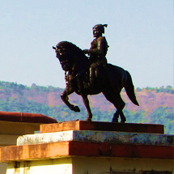
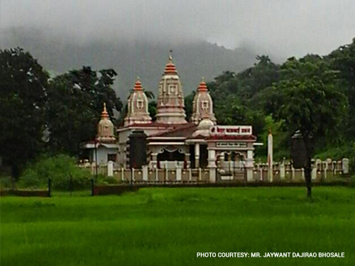

About Us

Kumbhad is small village situated at the foothills of the Sahaydri ranges. The village is gifted with beautiful scenary and has rich culture and a brave history.
It is the part of the Seven villages of Bhosale family(7 gaon Bhosale). Population of Kumbhad is around 2000 and people of all sects including Maratha, Kumbhar(potter), NavBuddha, Nhavi(barber) and rohidas reside here with harmony and peace.
Architecture view of the village is North-South the main road which is the only road goes through the center of the village and the river' Kumbharli' runs from the west.Kumbhad has 5 wadis.and 7 Takshim (1. Sabhai 2) Narayan bua 3) Khot Gharane 4) Chandu bua 5) Yesu bua 6) Choughar 7) Habsena
At the north is the temple of Gramdevta - Lord Kedar (an avatar of Lord Shiva) , along with the idols of Lord Kedar there are idols of Lord Kalkay, Zholay, Waghjai and Kalashri Marka is the guard to these gods.
There are other temples of Lord Somaiyaa, Lord Ganesh and Lord Maruti.
At the entrance of Kumbhad there is a temple of Lord Dattatreya and to its side is the Statue of Chattrapati Shivaji Maharaj (the pride of Maharashtra and India)

A brief insight
The people of Kumbhad are entusiastic and are hearty by nature and this shows up in the way they celebrate their festivals throughout the year. Some of the Main festivals celebrated here are: Holi (Shimga),Gudhi Padwa,Ganesh chaturti, Deepvali, Dassera,

Lord Kedar temple reconstruction:
The Lord Kedar temple had been existing since a long time, and over the years efforts were made to renovate the temple time to time by our respected ancestoris. but in the recent years the temple building had been weak and needed immediate attention. When this was brought to notice, a group of enthustiastic people chalked out the plan, distributed the responsibilites among themselves and most importantly acted upon the plans and entirely rebuilt the temple in record time, ofcourse of this the local residents to the village also provided their support . The team of people who put the efforts for the temple reconstruction is definitely worth a praise. The team overcame all the obstacles that they met during their journey for completing the temple in record time i.e. within 1 year.
Festival
Shimga is a grand five-day festival of colors, celebrated distinctively in the Kumbhad, corresponding with Holi or Spring Festival. Held for one-week up to the full-moon day in March.
Ganesh Chaturthi is the Birthday of Lord Ganesh, and is celebrated all over konkan. Residents migrated to Mumbai-Pune for work return to the native for this festival, which is associated with a good harvest.
Navaratri or the nine nights festival associated with Lord Rama's defeat of Ravana, demon-king of Lanka, culminates in the grand festival of Dussehra. Dussehra is celebrated by devotees of the Mother Goddess as her festival. Special celebrations for most of all Devi Temples.

Ceremony
The People of Kumbhad are hardworking and strong, thus there diet is full of nourishments and heavy, It primarily conisists of Rice and fish. The 'Bhakari' (rice bread) along with 'Sukat' (dried sea fish) is a common breakfast and lunch.
For celebrations especially when the chakarmain's return to their natives, almost every house has the preparation for Wade - Mutton.During the Vegatarian months, Sweet preparation like Puranpoli, modak, kheer,coconut wade etc are prepared.
Cuisine
The People of Kumbhad are hardworking and strong, thus there diet is full of nourishments and heavy, It primarily conisists of Rice and fish. The 'Bhakari' (rice bread) along with 'Sukat' (dried sea fish) is a common breakfast and lunch.
For celebrations especially when the chakarmain's return to their natives, almost every house has the preparation for Wade - Mutton.During the Vegatarian months, Sweet preparation like Puranpoli, modak, kheer,coconut wade etc are prepared.
Committee
Gram seva Kumbhad - Pune
- Shri. Jayram Shivram Bhosale
-
Capt. Babanrao Mahadevrao Surve
Shri. Jaywant Dajirao Bhosale - Shri. Vilas Wamanrao Surve
- Shri. Dattaram Ganpatrao Bhosale
- Shri. Sampat Mansinghrao Bhosale
- Shri. Prakash Dajirao Bhosale
- Shri. Shashikant Baburao Bhosale
- Shri. Pradeep Dinkarrao Bhosale
- Shri. Suresh Shivajirao Bhosale